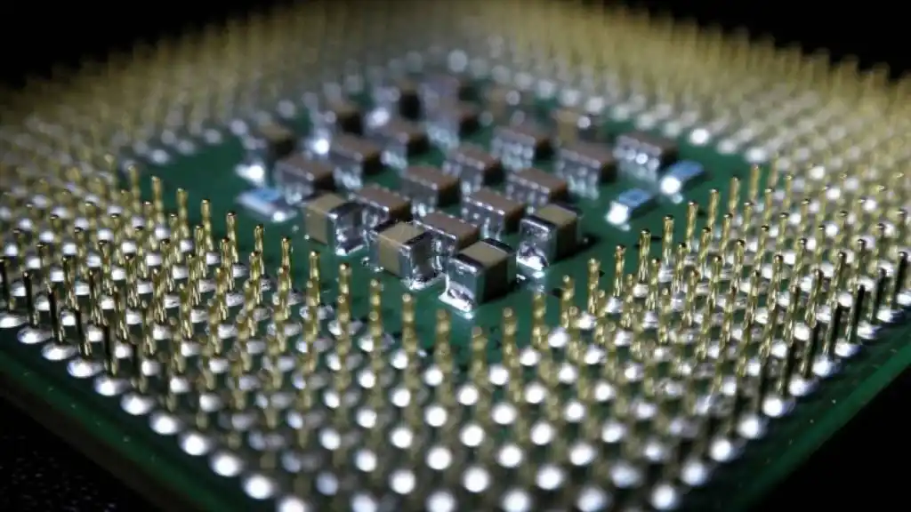
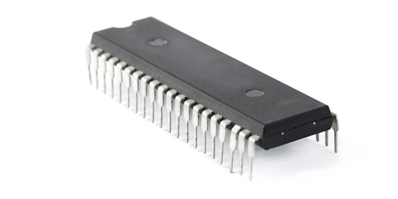
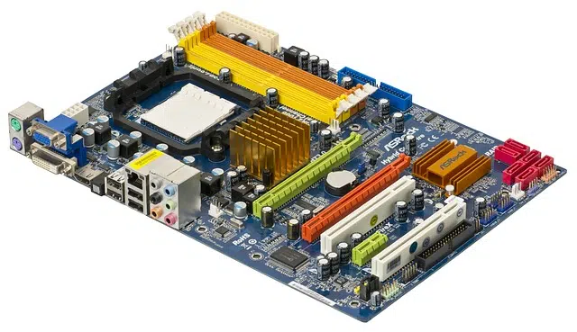
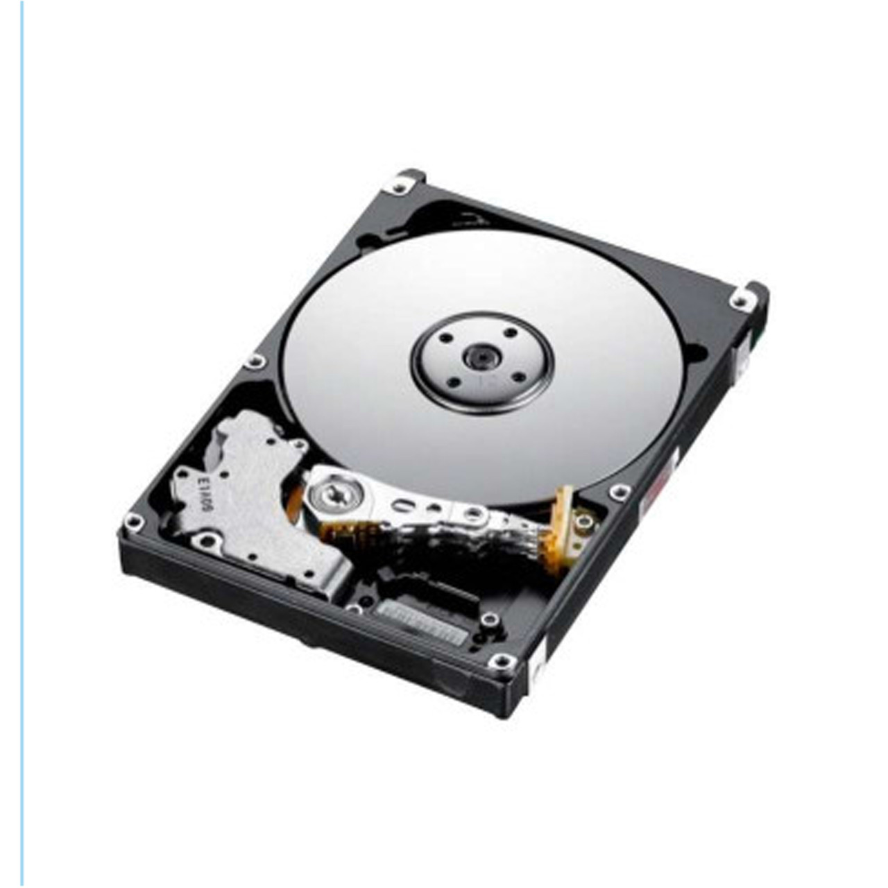
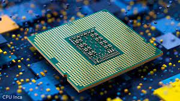
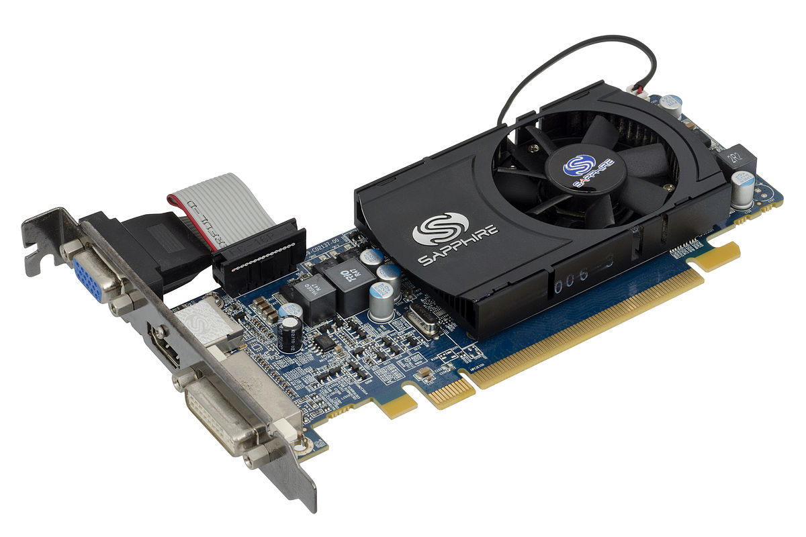
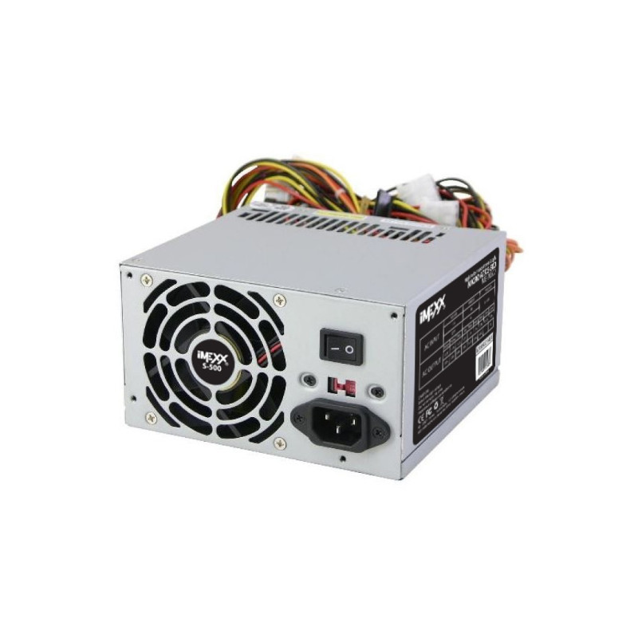
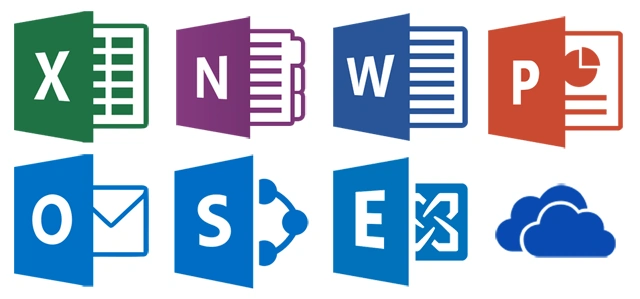
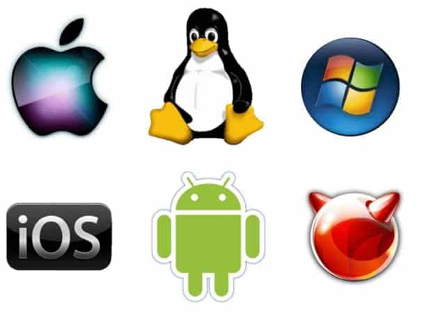

La computadora y sus Partes
¿Que es la computadora?
Un computador, computadora u ordenador es una maquina digital programable, de funcionamiento electronico, es un dispositivo que puede recibir, almacenar, procesar informacion y generar resultados o respuestas

La enorme cantidad de componentes de una computadora pueden agruparse en dos categorias separadas, que son:
- Hardware:
La parte fisica tangible del sistema, o sea, sus componentes
- Software:
La parte intangible, digital, abstracta, del sistema
Hardware
El hardware son aquellos elementos físicos o materiales que constituyen una computadora o un sistema informático. Es decir, son aquellas partes físicas de un sistema operativo tales como sus componentes eléctricos, electrónicos, electromecánicos, mecánicos y cualquier elemento físico que esté involucrado.
- Procesador:
El procesador (CPU, Central Processing Unit) es el componente más importante dentro del PC. Es el cerebro de todo el funcionamiento del sistema, el encargado de dirigir todas las tareas que lleva a cabo el equipo y de ejecutar el código de los diferentes programas.

- Memoria RAM: La memoria de acceso aleatorio, es una memoria de almacenamiento a corto plazo. El sistema operativo de ordenadores u otros dispositivos utiliza la memoria RAM para almacenar de forma temporal todos los programas y sus procesos de ejecución. En la RAM se cargan todas las instrucciones que ejecuta la unidad central de procesamiento (CPU) y otras unidades del ordenador, además de contener los datos que manipulan los distintos programas.

- Memoria ROM: La memoria de solo lectura, conocida también como ROM (acrónimo en inglés de Read Only Memory), es un medio de almacenamiento utilizado en ordenadores y dispositivos electrónicos, que permite solo la lectura de la información y no su escritura, independientemente de la presencia o no de una fuente de energía.

- Tarjeta madre: La placa base, también conocida como tarjeta madre, placa madre o placa principal, es una tarjeta de circuito impreso a la que se conectan los componentes que constituyen la computadora. En muchos lugares de habla hispana se usa la palabra inglesa con el artículo en femenino.

- Disco duro: Es un tipo de tecnología que almacena el sistema operativo, las aplicaciones y los archivos de datos que su computadora usa para un funcionamiento normal.

- Memoria cache: Es una capa de almacenamiento de datos de alta velocidad que almacena un subconjunto de datos, normalmente transitorios, de modo que las solicitudes futuras de dichos datos se atienden con mayor rapidez que si se debe acceder a los datos desde la ubicación de almacenamiento principal.

- Tarjeta grafica: Una tarjeta gráfica o tarjeta de video es una tarjeta de expansión de la tarjeta madre o motherboard del computador que se encarga de procesar los datos provenientes del procesador y transformarlos en información comprensible y representable en el dispositivo de salida (por ejemplo: monitor, televisor o proyector). Estas tarjetas utilizan una unidad de procesamiento gráfico o GPU, que muchas veces se usa erróneamente para referirse a la tarjeta gráfica en sí. También se les conoce como Adaptador de pantalla, Adaptador de vídeo, Placa de vídeo, y Tarjeta aceleradora de gráficos.

- Fuente de poder: Son equipos cuya principal función es transformar la energía. Existe la creencia que las fuentes de poder generan energía y esto es falso. Sirven para transformar un tipo de energía en otra necesaria para el correcto funcionamiento de nuestros dispositivos.

Software
Se conoce como software logicial o soporte lógico al sistema formal de un sistema informático, sistema formal de un sistema informático, que comprende el conjunto de los componentes lógicos necesarios que hace posible la realización de tareas específicas, en contraposición a los componentes físicos que son llamados hardware. La interacción entre el software y el hardware hace operativo un ordenador (u otro dispositivo), es decir, el software envía instrucciones que el hardware ejecuta, haciendo posible su funcionamiento.
- Sofware de Aplicacion: El software de aplicación es un tipo de software de computadora diseñado para realizar un grupo de funciones, tareas o actividades coordinadas para el beneficio del usuario. Ejemplos de una aplicación en ocasiones se usa el acortamiento inglés app, de application serían un procesador de textos, una hoja de cálculo, una aplicación de contabilidad, un navegador web, un reproductor multimedia, un simulador de vuelo aeronáutico o un editor de fotografías. «Software de aplicación» hace referencia colectivamente a todas las aplicaciones, como analogía con el software del sistema, que está principalmente relacionado con aquel ejecutado por el sistema operativo.

- Software de sistemas El software de sistema, denominado también software de base, es el conjunto de instrucciones que permiten el manejo de la computadora. Una computadora sin software de sistema se hace inmanejable. Consiste en un software que sirve de soporte o base para controlar e interactuar con el hardware y otros programas; en contraposición del llamado software de aplicación. Como ejemplos tenemos los sistemas operativos y los controladores.

Regresar